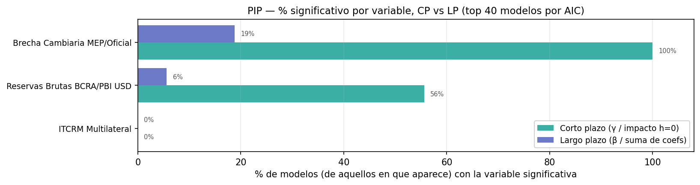
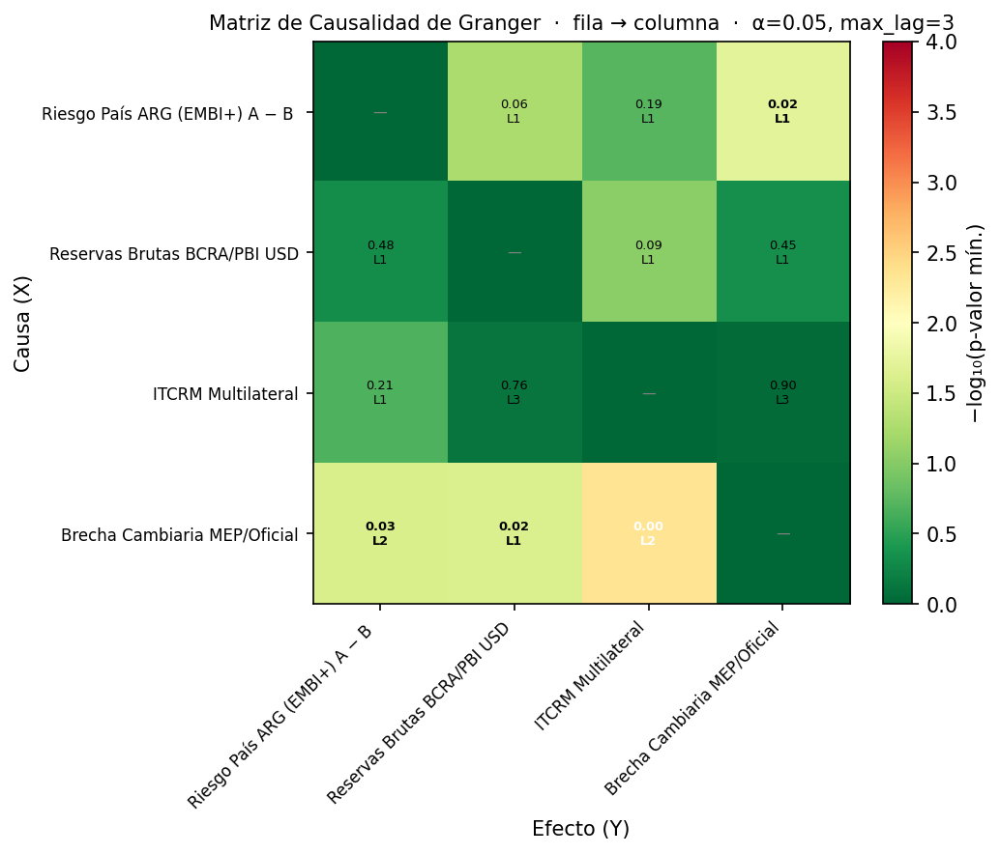
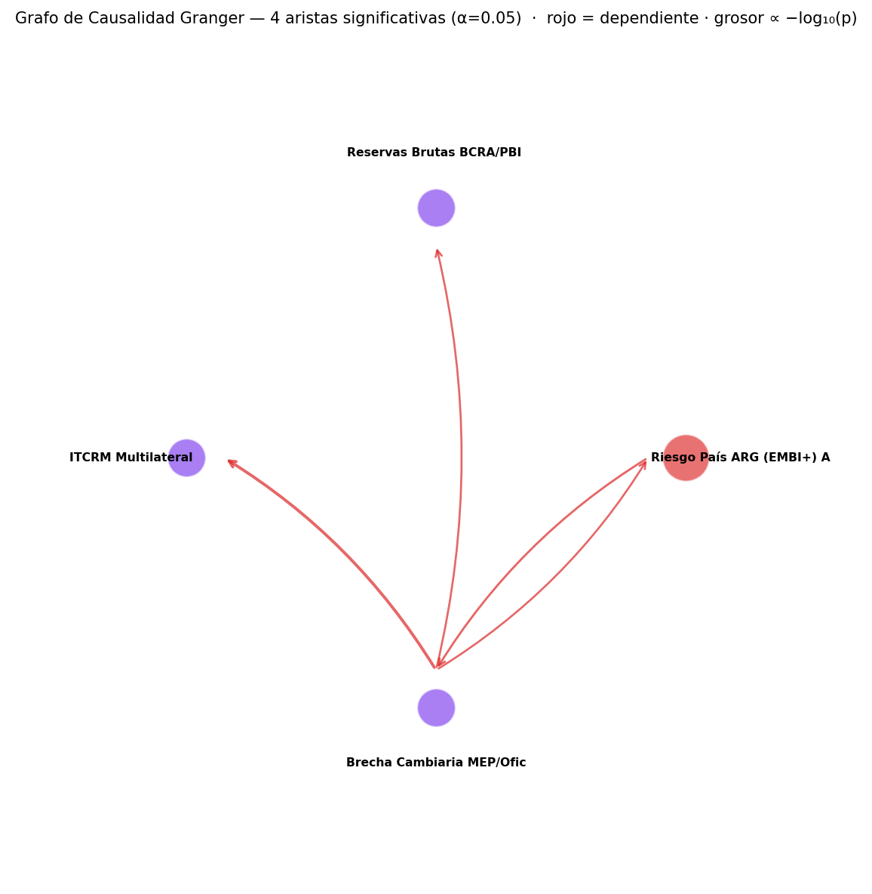
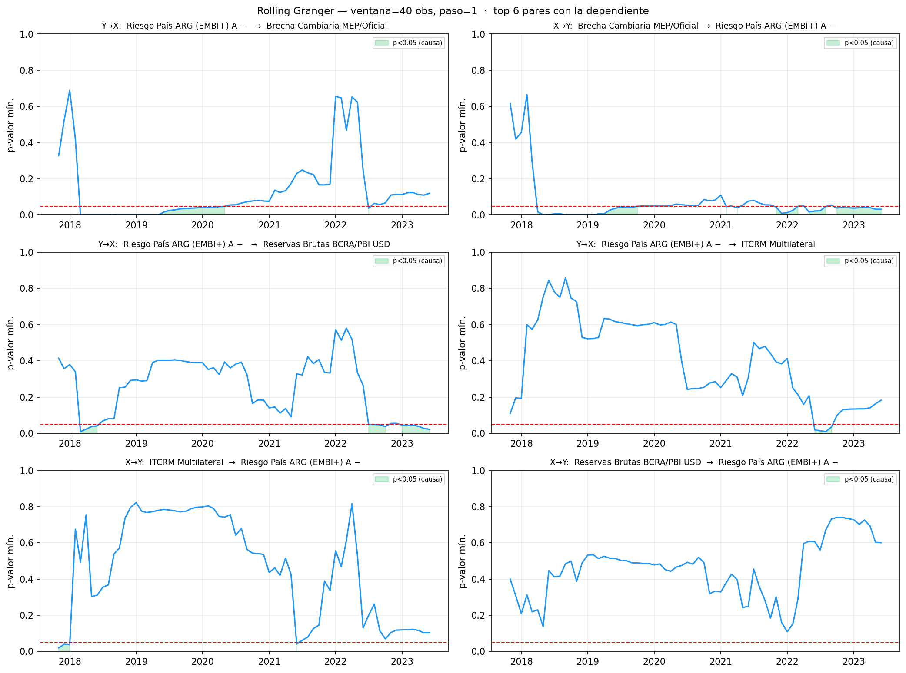

3-4. Configuración y panel
- Variable dependiente: Riesgo País ARG (EMBI+) A − B EMBI+ Latinoamérica
- Frecuencia detectada: M (cap de lags = 3)
- Observaciones: 108
- Variables explicativas: 5
- Período: 2016-01-31 → 2024-12-31
- Nivel de significancia: α = 0.05
5. Series del panel

6. Estacionariedad (ADF + KPSS)
| Variable | Nivel OK | Diff OK | Orden |
|---|---|---|---|
| Reservas Brutas BCRA/PBI USD | NO | SI | I(1) |
| ITCRM Multilateral | NO | SI | I(1) |
| Riesgo País ARG (EMBI+) A − B EMBI+ Latinoamérica | NO | SI | I(1) |
| Brecha Cambiaria MEP/Oficial | NO | SI | I(1) |
| Dummy_cepo | SI | NO | I(0) |
| Dummy_Milei | SI | NO | I(0) |
10. Resultados Consolidados
① Coeficientes de CORTO PLAZO (γ en VECM, impacto h=0 en VAR)

② Coeficientes de LARGO PLAZO (β en VECM, suma de coefs en VAR)

③ % significativo por variable — Corto vs Largo plazo

④ Análisis PIP — Relevancia de cada variable en los Top-40 modelos
PIP — Frecuencia y significancia de cada variable en los top 40 modelos (por AIC)
| variable | N_aparece | N_top | N_sig_lp | Pct_sig_LP | N_sig_cp | Pct_sig_CP |
|---|---|---|---|---|---|---|
| Brecha Cambiaria MEP/Oficial | 16 | 40 | 3 | 18.8 | 16 | 100.0 |
| Reservas Brutas BCRA/PBI USD | 18 | 40 | 1 | 5.6 | 10 | 55.6 |
| ITCRM Multilateral | 16 | 40 | 0 | 0.0 | 0 | 0.0 |
⑤ Top 10 modelos por criterio (clic para expandir)
🔽 Top 10 GLOBAL por AIC
Top 10 GLOBAL por AIC
| modelo | vars_label | aic | bic | hq | r2 | nobs |
|---|---|---|---|---|---|---|
| VAR | Brecha Cambiari | 6.3386 | 6.6419 | 6.4615 | 0.2822 | 105 |
| VAR | ITCRM Multilate|Brecha Cambiari | 9.6859 | 10.2925 | 9.9317 | 0.2875 | 105 |
| VAR | Brecha Cambiari|ITCRM Multilate | 9.6859 | 10.2925 | 9.9317 | 0.2875 | 105 |
| VAR | ITCRM Multilate | 14.4869 | 14.7902 | 14.6098 | 0.2389 | 105 |
| VECM | Reservas Brutas BCRA/PBI USD|Brecha Cambiaria MEP/Oficial | 22.1856 | 22.9439 | 22.4929 | 0.3079 | 105 |
| VAR | Reservas Brutas|Brecha Cambiari | 22.2963 | 22.9787 | 22.5728 | 0.2883 | 105 |
| VAR | Brecha Cambiari|Reservas Brutas | 22.2963 | 22.9787 | 22.5728 | 0.2883 | 105 |
| VAR | ITCRM Multilate|Reservas Brutas|Brecha Cambiari | 25.6233 | 26.7354 | 26.0739 | 0.2954 | 105 |
| VAR | Reservas Brutas|ITCRM Multilate|Brecha Cambiari | 25.6233 | 26.7354 | 26.0739 | 0.2954 | 105 |
| VAR | Brecha Cambiari|ITCRM Multilate|Reservas Brutas | 25.6233 | 26.7354 | 26.0739 | 0.2954 | 105 |
🔽 Top 10 GLOBAL por BIC
Top 10 GLOBAL por BIC
| modelo | vars_label | aic | bic | hq | r2 | nobs |
|---|---|---|---|---|---|---|
| VAR | Brecha Cambiari | 6.3386 | 6.6419 | 6.4615 | 0.2822 | 105 |
| VAR | Brecha Cambiari|ITCRM Multilate | 9.6859 | 10.2925 | 9.9317 | 0.2875 | 105 |
| VAR | ITCRM Multilate|Brecha Cambiari | 9.6859 | 10.2925 | 9.9317 | 0.2875 | 105 |
| VAR | ITCRM Multilate | 14.4922 | 14.7450 | 14.5946 | 0.2075 | 105 |
| VAR | Reservas Brutas|Brecha Cambiari | 22.3825 | 22.9133 | 22.5976 | 0.2560 | 105 |
| VAR | Brecha Cambiari|Reservas Brutas | 22.3825 | 22.9133 | 22.5976 | 0.2560 | 105 |
| VECM | Reservas Brutas BCRA/PBI USD|Brecha Cambiaria MEP/Oficial | 22.1856 | 22.9439 | 22.4929 | 0.3079 | 105 |
| VAR | Reservas Brutas|ITCRM Multilate|Brecha Cambiari | 25.7542 | 26.6642 | 26.1230 | 0.2568 | 105 |
| VAR | ITCRM Multilate|Brecha Cambiari|Reservas Brutas | 25.7542 | 26.6642 | 26.1230 | 0.2568 | 105 |
| VAR | ITCRM Multilate|Reservas Brutas|Brecha Cambiari | 25.7542 | 26.6642 | 26.1230 | 0.2568 | 105 |
🔽 Top 10 GLOBAL por HQ
Top 10 GLOBAL por HQ
| modelo | vars_label | aic | bic | hq | r2 | nobs |
|---|---|---|---|---|---|---|
| VAR | Brecha Cambiari | 6.3386 | 6.6419 | 6.4615 | 0.2822 | 105 |
| VAR | ITCRM Multilate|Brecha Cambiari | 9.6859 | 10.2925 | 9.9317 | 0.2875 | 105 |
| VAR | Brecha Cambiari|ITCRM Multilate | 9.6859 | 10.2925 | 9.9317 | 0.2875 | 105 |
| VAR | ITCRM Multilate | 14.4922 | 14.7450 | 14.5946 | 0.2075 | 105 |
| VECM | Reservas Brutas BCRA/PBI USD|Brecha Cambiaria MEP/Oficial | 22.1856 | 22.9439 | 22.4929 | 0.3079 | 105 |
| VAR | Brecha Cambiari|Reservas Brutas | 22.3173 | 22.9239 | 22.5631 | 0.2878 | 105 |
| VAR | Reservas Brutas|Brecha Cambiari | 22.3173 | 22.9239 | 22.5631 | 0.2878 | 105 |
| VAR | Brecha Cambiari|ITCRM Multilate|Reservas Brutas | 25.6607 | 26.6717 | 26.0704 | 0.2942 | 105 |
| VAR | Reservas Brutas|Brecha Cambiari|ITCRM Multilate | 25.6607 | 26.6717 | 26.0704 | 0.2942 | 105 |
| VAR | Reservas Brutas|ITCRM Multilate|Brecha Cambiari | 25.6607 | 26.6717 | 26.0704 | 0.2942 | 105 |
🔽 Top 10 GLOBAL por R² ajustado
Top 10 GLOBAL por R² ajustado
| modelo | vars_label | aic | bic | hq | r2 | nobs |
|---|---|---|---|---|---|---|
| VECM | Reservas Brutas BCRA/PBI USD|Brecha Cambiaria MEP/Oficial | 22.1856 | 22.9439 | 22.4929 | 0.3079 | 105 |
| VAR | Brecha Cambiari|ITCRM Multilate|Reservas Brutas | 25.7462 | 27.2718 | 26.3643 | 0.3019 | 104 |
| VAR | Reservas Brutas|ITCRM Multilate|Brecha Cambiari | 25.7462 | 27.2718 | 26.3643 | 0.3019 | 104 |
| VAR | ITCRM Multilate|Brecha Cambiari|Reservas Brutas | 25.7462 | 27.2718 | 26.3643 | 0.3019 | 104 |
| VAR | Brecha Cambiari|Reservas Brutas|ITCRM Multilate | 25.7462 | 27.2718 | 26.3643 | 0.3019 | 104 |
| VAR | ITCRM Multilate|Reservas Brutas|Brecha Cambiari | 25.7462 | 27.2718 | 26.3643 | 0.3019 | 104 |
| VAR | Reservas Brutas|Brecha Cambiari|ITCRM Multilate | 25.7462 | 27.2718 | 26.3643 | 0.3019 | 104 |
| VAR | Reservas Brutas|Brecha Cambiari | 22.4304 | 23.3458 | 22.8013 | 0.2941 | 104 |
| VAR | Brecha Cambiari|Reservas Brutas | 22.4304 | 23.3458 | 22.8013 | 0.2941 | 104 |
| VECM | Reservas Brutas BCRA/PBI USD | 26.7386 | 27.1963 | 26.9240 | 0.2917 | 104 |
⑥ Distribución de criterios y R² por tipo de modelo

⑦ Mejor modelo por criterio — detalle de coeficientes
🏆 Mejor por AIC: VAR — Brecha Cambiari (AIC=6.339 · BIC=6.642 · HQ=6.462 · R²=0.2822)
| Variable | Coef LP | p-val LP | Coef CP | p-val CP |
|---|---|---|---|---|
| Brecha Cambiaria MEP/Oficial | 57.8501 | 0.0938 | 61.6946 | 0.0026 |
| [D] Dummy_Milei | NaN | NaN | -143.4478 | 0.0323 |
🏆 Mejor por BIC: VAR — Brecha Cambiari (AIC=6.339 · BIC=6.642 · HQ=6.462 · R²=0.2822)
| Variable | Coef LP | p-val LP | Coef CP | p-val CP |
|---|---|---|---|---|
| Brecha Cambiaria MEP/Oficial | 57.8501 | 0.0938 | 61.6946 | 0.0026 |
| [D] Dummy_Milei | NaN | NaN | -143.4478 | 0.0323 |
🏆 Mejor por HQ: VAR — Brecha Cambiari (AIC=6.339 · BIC=6.642 · HQ=6.462 · R²=0.2822)
| Variable | Coef LP | p-val LP | Coef CP | p-val CP |
|---|---|---|---|---|
| Brecha Cambiaria MEP/Oficial | 57.8501 | 0.0938 | 61.6946 | 0.0026 |
| [D] Dummy_Milei | NaN | NaN | -143.4478 | 0.0323 |
🏆 Mejor por R² ajustado: VECM — Reservas Brutas BCRA/PBI USD|Brecha Cambiaria MEP/Oficial (AIC=22.186 · BIC=22.944 · HQ=22.493 · R²=0.3079)
| Variable | Coef LP | p-val LP | Coef CP | p-val CP |
|---|---|---|---|---|
| Reservas Brutas BCRA/PBI USD | -0.1015 | 0.6022 | 0.0068 | 0.3666 |
| Brecha Cambiaria MEP/Oficial | -15106.8112 | 0.6042 | -400.0176 | 0.0357 |
| [D] Dummy_cepo | NaN | NaN | 152.6802 | 0.0474 |
| [D] Dummy_Milei | NaN | NaN | -200.0993 | 0.0084 |
⑧ Predicción del mejor modelo vs serie observada

Mejor por tipo de modelo


⑨ VECM — Velocidad de ajuste (α) y γ


⑩ Variables DUMMY exógenas (controles fijos)
Dummies: %sig + coef medio/mediana por modelo
| dummy | modelo | N | N_sig | Pct_Sig | mean | median |
|---|---|---|---|---|---|---|
| Dummy_Milei | ARDL | 84 | 6 | 7.1 | -102.4516 | -107.5595 |
| Dummy_Milei | VAR | 60 | 47 | 78.3 | -150.1455 | -150.1090 |
| Dummy_Milei | VECM | 12 | 4 | 33.3 | -128.7313 | -121.5039 |
| Dummy_cepo | ARDL | 84 | 0 | 0.0 | -42.3844 | -41.7314 |
| Dummy_cepo | VAR | 60 | 0 | 0.0 | -31.6705 | -32.5657 |
| Dummy_cepo | VECM | 13 | 8 | 61.5 | 143.7490 | 139.4145 |

⑪ Causalidad de Granger (pairwise + rolling)
Test pairwise sobre todas las series del panel (transformadas a su forma estacionaria según el orden de integración detectado). Fila = causa, columna = efecto. El valor reportado es el p-valor mínimo a lo largo de los lags 1..max_lag, junto al lag óptimo (L). En negrita = p<0.05. El grafo dibuja solo las aristas significativas; grosor proporcional a −log₁₀(p). El rolling muestra cómo evoluciona la causalidad en ventanas móviles para los pares que involucran a la variable dependiente (zonas verdes = la causalidad es estadísticamente significativa en esa ventana).



Nota: en VECM las dummies son shocks exógenos de impacto — no entran en β ni en la suma de coefs de LP, por eso aparecen NaN ahí.